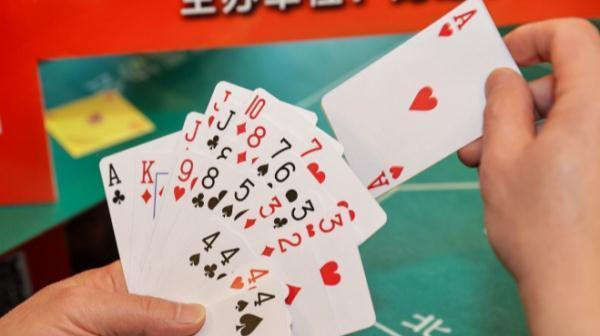

中国官员和商界这两年流行玩扑克牌「掼蛋」游戏，它甚至被称为是基层干部的「必修课程」及企业人士「社交利器」。媒体警告，掼蛋沉迷已成为某种值得重视和警惕的社会现象。
掼蛋游戏由江苏淮安人创始，在淮安话中「掼」是摔、砸的意思，「掼蛋」是打牌人将手中「蛋」（又称「炸弹」）砸向桌面的动作。正如经典的桥牌，「掼蛋」由4名玩家分成2组进行。玩家需使用2副扑克牌，必须以更大的牌型压制对方，最先把手中的牌出光者为胜，之后再计分升级。
「掼蛋」去年以来迅速从发源地江苏走红到全中国，从体制内官员流行到投资圈，据不完全统计，全中国有1.4亿人玩此游戏。甚至在昆山、苏州、厦门等地，也有以两岸交流名义举办掼蛋比赛。
党媒北京青年报今天刊文指出，某大学教授不久前在学生毕业典礼上怒批当下掼蛋之风盛行，横扫大江南北，是社会失去动力、失去企业家精神的表现，是逃避之风、颓废之风」，盼毕业生不要加入这一日渐膨胀的队伍。
文章说，一些党员干部沉醉在掼蛋中不能自拔；更有一些单位形成了「社交壁垒」，不会掼蛋就融不进圈子；还有企业经营者不思提升竞争力，反而试图利用掼蛋和官员拉关系。
文章批评掼蛋沉迷成为「躺平文化」的新变种，「奋斗的激情在游戏中消颓，拚搏的志气在娱乐中丧失」，对个人和社会并非好事。
去年8月，路透社报导指出，掼蛋游戏的热潮正逐渐席卷中国各地的企业界，部分原因是中国与最大贸易伙伴美国关系日益紧张，导致外资来源受限。一名游说政府注资半导体、国防相关计划的杨姓投资银行家表示：「官员们都爱玩这游戏，所以我们就陪着一起玩。」